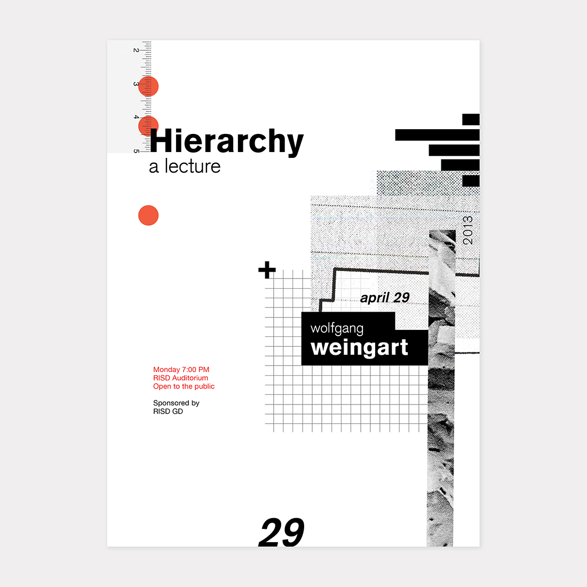
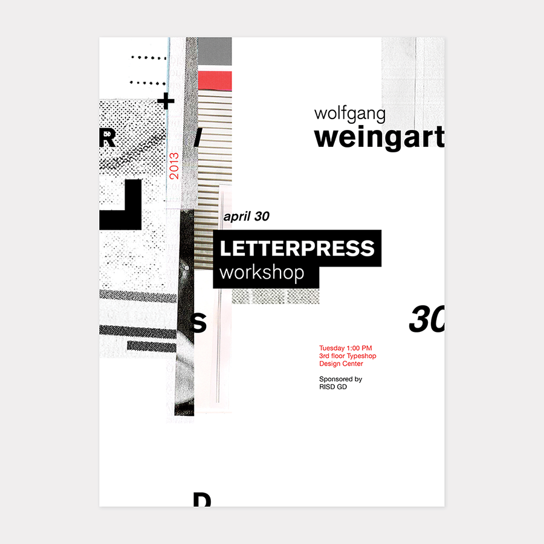

Wolfgang Weingart
Print, Typography
A focus on the integration of typography, imagery and information at a large scale presented in the form of a mock Visiting Designer poster. I chose to research Wolfgang Weingart – Swiss designer, professor of Basel School Design, and Father of Punk and New Wave typography.
In my process, I worked with interesting collage and graphic elements and created compositions that were loosely inspired by his style. I aimed to achieve balance between organized information and visual clutter in a similar sense he did.
25" by 34" Posters

